Plaza Bolivar
Espacio concurrido por los habitantes locales para conversar y pasear cerca de la iglesia principal.
Explora monumentos históricos, la mejor gastronomía local, áreas recreativas y opciones de hospedaje en el corazón del Sur del Lago.
Selecciona una categoria para explorar los lugares mas representativos del Municipio Colon.

Sede de la Diocesis de El Vigia - San Carlos del Zulia y epicentro de la devocion mariana y patronal del municipio.
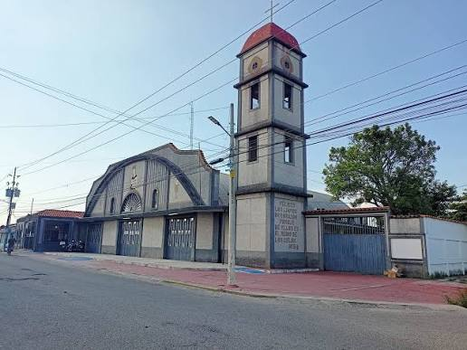
Templo historico y patrimonial, simbolo del origen y las tradiciones socioculturales de San Carlos del Zulia.
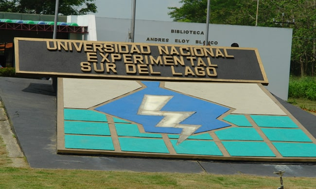
Principal complejo universitario del municipio Colon, centrado en el desarrollo academico, cientifico e industrial de la region.
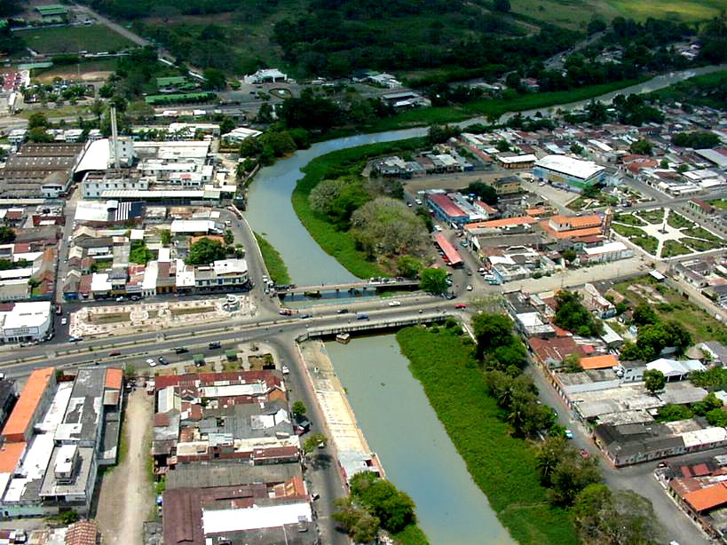
Arteria fluvial historica y geografica que divide y une geograficamente a Santa Barbara y San Carlos del Zulia.
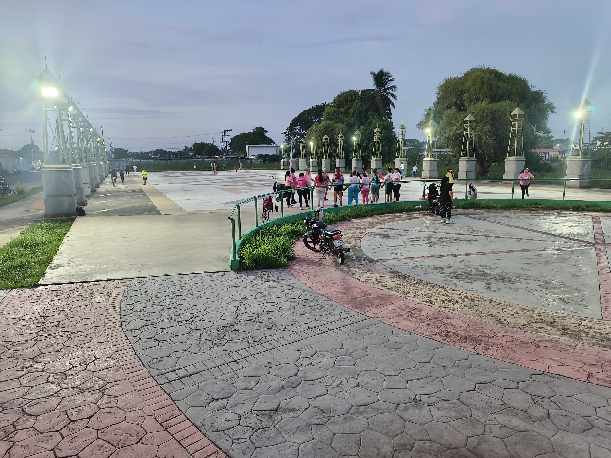
Espacio peatonal y recreativo a orillas del rio, ideal para el esparcimiento familiar, caminatas y eventos comunitarios.
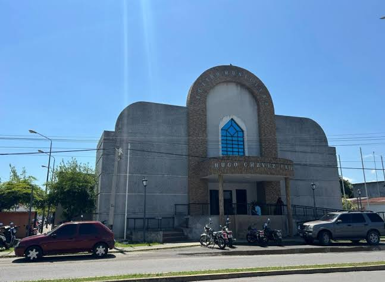
Centro cultural y escenario principal de eventos sinfonicos y artisticos del municipio Colon.
Espacio concurrido por los habitantes locales para conversar y pasear cerca de la iglesia principal.

Parque urbano muy visitado que cuenta con areas recreativas y fuentes de agua.
Destaca por sus labores de mantenimiento, iluminacion y reactivacion de espacios ornamentales.
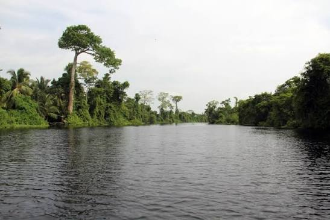
Santuario ecologico y ecosistema de cienagas famoso por albergar el fenomeno del Relampago del Catatumbo.

Pilar del consorcio San Simon, con ganaderia de doble proposito y cultivo de palma africana aceitera.
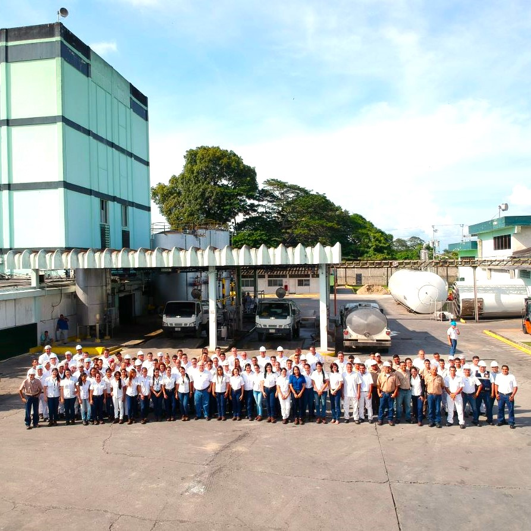
Esquema de produccion integrada que procesa la leche de cientos de fincas ganaderas de la zona.
Matadero industrial y centro de beneficio de reses de alta capacidad para distribucion carnica nacional.
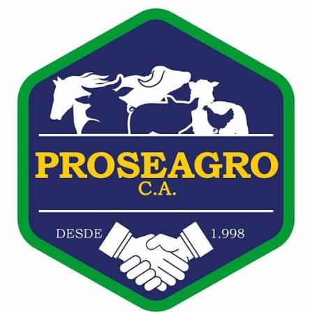
Distribuidor de insumos agropecuarios, medicamentos veterinarios y alimentos balanceados en el Edificio AGANACO.
Centro de distribucion de fertilizantes, semillas certificadas, agroquimicos y financiamiento tecnico.
Explora la tradicion culinaria, platos autoctonos y la oferta gastronomica del Municipio Colon.
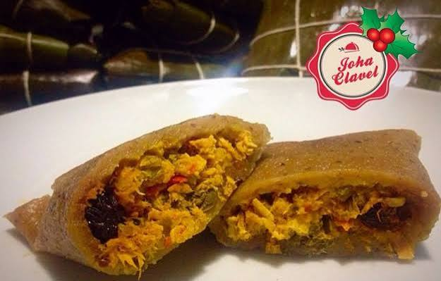
Masa de platano verde rallado, guiso de carne y envoltura en hojas de bijao.
Patrimonio cultural local. Plato insignia del Municipio Colon y la zona del Sur del Lago.
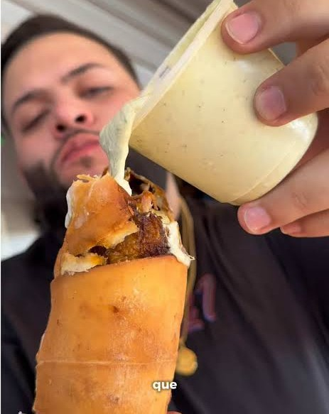
Tequeno gigante relleno de platano maduro, queso blanco, carne mechada y jamon.
Una creacion gastronomica monumental muy popular en la zona del Sur del Lago.
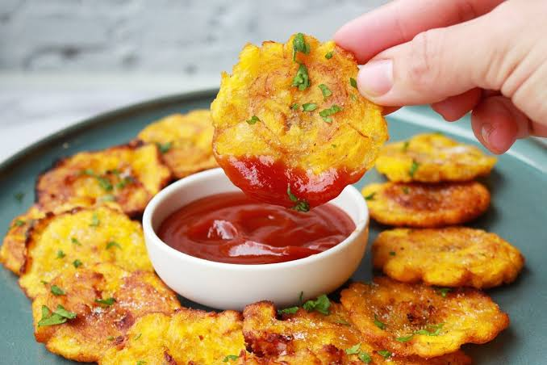
Platano verde frito, aplastado y vuelto a freir. Con queso criollo y salsas.
Base fundamental de la dieta del colones y zuliano. Crujiente y delicioso.
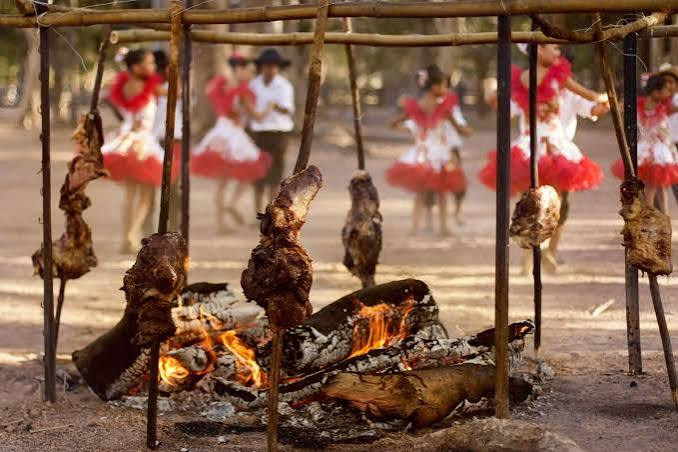
Cortes de res de la zona ganadera, asados a la lena y servidos con yuca fresca.
Reflejo directo de la potencia pecuaria del municipio Colon. Tradicion ganadera.
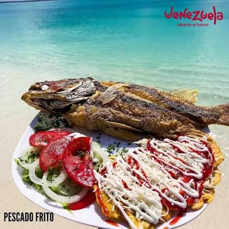
Bocachico o manamana fritos, capturados en los rios locales y acompañados con tostones.
Especialidad gastronomica ligada a las cuencas del Rio Escalante y el Lago de Maracaibo.
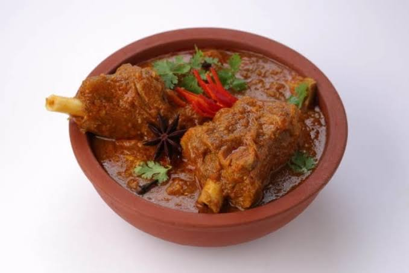
Guisos de carne, pescado o aves cocinados con leche de coco espesa y especias.
Platos caracteristicos del estado Zulia aplicados a la cocina del Sur del Lago.
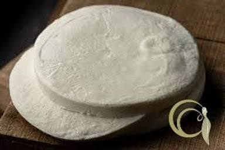
Lacteos frescos y madurados producidos por la fuerte actividad ganadera del Municipio Colon.
Derivados lacteos de excelencia gracias a la elevada produccion ganadera del municipio.
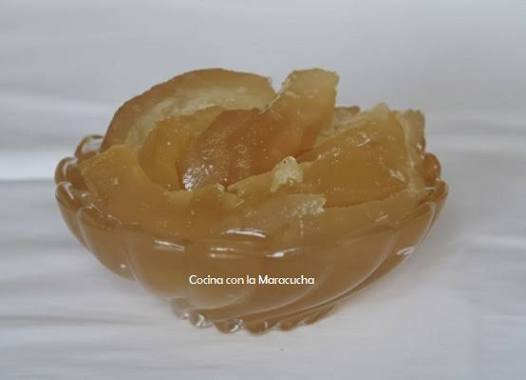
Postre tradicional en almibar elaborado artisticamente con la corteza de este citrico gigante.
Una joya dulcera de la region del Sur del Lago. Postre artesanal tradicional.
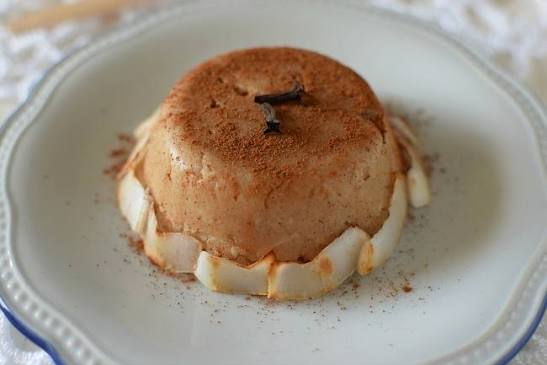
Dulce cremoso a base de maiz, leche de coco, papelon y canela molida.
Dulce criollo y tradicional. Postre emblematico de consistencia similar a un flan o natilla.
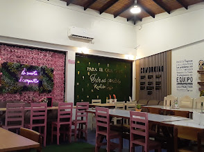
4.8 (24) - Restaurante y Cafe
232R+3JV, Av. Bolivar
Consumo en el lugar y para llevar
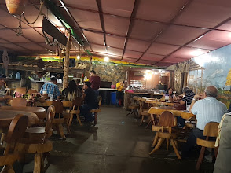
4.6 (1K) - Parrillas y Especialidades
Santa Rita, Zulia
"Excelentes parrillas, muy buenas al igual que sus salsas."
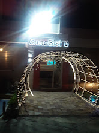
4.4 (100) - Comida Zuliana e Internacional
X3XP+HWH
"Buen nivel de servicio y seleccion de comida."
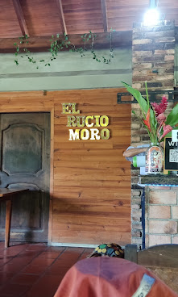
4.4 (66) - Restaurante Campestre
X4J2+M9F
"La comida es excelente, un ambiente al aire libre."
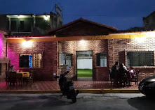
4.5 (52) - Restaurante
Av. 8
Autoservicio, pedidos desde el automovil, entrega sin contacto
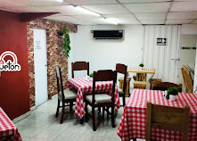
4.8 (23) - Ideal para Familias
235P+RX9
Consumo en el lugar, retiros en la puerta, entrega sin contacto
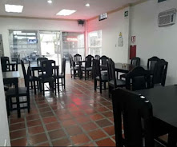
4.4 (151) - $5-10 - Especialidades en Patacones
X3VP+RR9, Unnamed Road
"Uno de los mejores lugares de Santa Barbara del Zulia."
4.3 (59) - Pizzeria
San Carlos del Zulia, Zulia
Consumo en el lugar, para llevar, entrega a domicilio
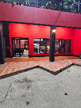
5.0 (1) - Comida Rapida y Bebidas
X3XP+HPH
Consumo en el lugar y para llevar
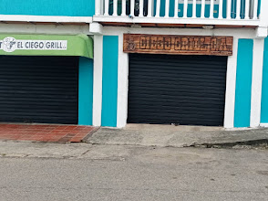
4.5 (152) - Parrillada Industrial
5148, Santa Barbara del Zulia
"Las mejores parrillas de Santa Barbara, recomendado 1000%."
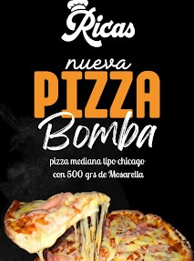
4.7 (35) - Bufé de Dulces y Reposteria
11 Bis, Santa Barbara del Zulia
Consumo en el lugar y para llevar
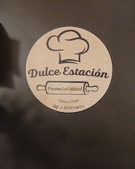
4.8 (13) - Postres y Heladeria
Santa Barbara del Zulia, Zulia
Consumo en el lugar, auto-servicio, entrega sin contacto
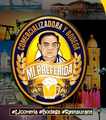
5.0 (13) - Bodega y Viveres
Frente/Diagonal a la Ford, Av. 8
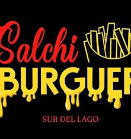
4.7 (3) - Comida Rapida
San Carlos del Zulia, Zulia
Desayunos y Comida Rapida Nocturna
Los hoteles de Santa Barbara del Zulia ofrecen alternativas comodas tanto para viajes de negocios como de turismo en la region del Sur del Lago.

Ubicado de forma estrategica en plena Avenida Bolivar. Calificado con 3 estrellas y con un reconocido servicio de restaurante.
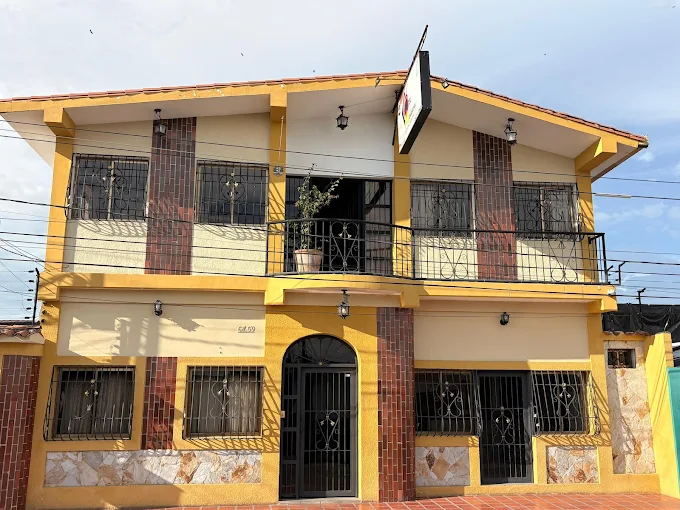
Situado en el Sector 18 de Octubre. Cuenta con aire acondicionado, TV, estacionamiento y ambiente familiar libre de humo y licores.
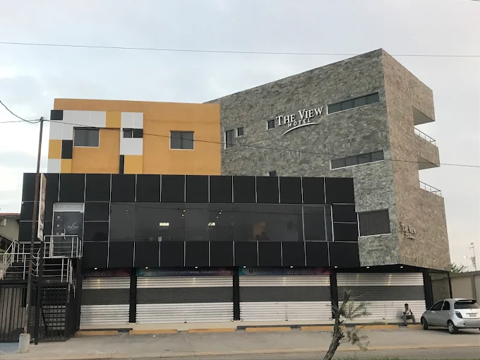
Ofrece habitaciones dobles y triples en espacios modernos acompañados de un area de bistro bar lounge.
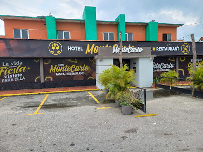
Una opcion tradicional para viajeros, equipada con restaurante y bar propio en plena zona urbana.

Alternativa confortable valorada por su tranquilidad. Dispone de planta electrica, estacionamiento y cena a la habitacion.

Ubicado en el Sector Calle 5 de Julio. Ideal para viajes de trabajo, cuenta con planta electrica, Wi-Fi y estacionamiento vigilado.